Существа
Фенрир
Фенрир (др.-исл. Fenrir, Fenrislfr, Hrvitnir) — в германо-скандинавской мифологии громадный волк, сын Локи и 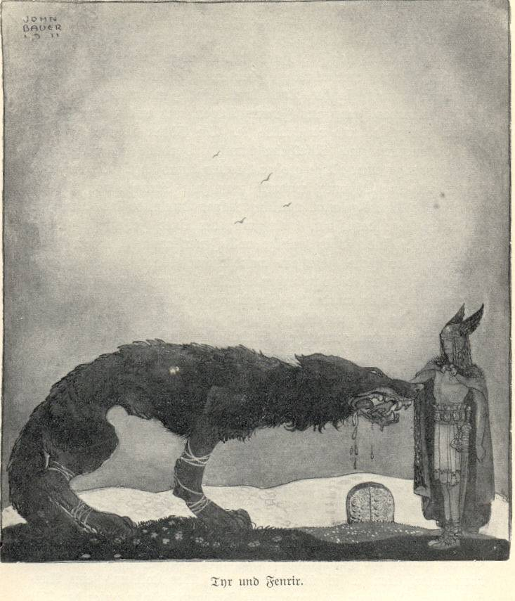 Ангрбоды. Враг богов Фенрир был младшим из детей Локи. Первоначально боги посчитали его недостаточно опасным и позволили жить в Асгарде. Волк вырос среди асов, и стал настолько велик и ужасен, что кормить его отваживался только Тюр, бог воинской храбрости. Чтобы обезопасить себя, асы решили сковать Фенрира цепью, но могучий волк легко рвал самые крепкие цепи (Лединг и Дромми). В конце концов асам хитростью всё же удалось сковать Фенрира волшебной цепью Глейпнир, которую сковали гномы из корней гор, бород женщин, шума кошачьих шагов, слюны рыб и сухожилий медведей. Но, чтобы волк позволил надеть на себя эту цепь, Тюру пришлось вложить руку ему в пасть в знак отсутствия злых намерений. Когда Фенрир не смог освободиться, он откусил руку Тюра. Асы приковали Фенрира к скале глубоко под землёй, и воткнули меч между его челюстями.
«Рукоять (меча) упёрлась под язык, а острие — в нёбо. И так распирает меч ему челюсть. Дико он воет, и бежит слюна из его пасти рекою, что зовётся Вон. И так он будет лежать, пока не придёт конец света»
В день Рагнарёка, согласно прорицанию Вёльвы, Фенрир разорвёт свои оковы а согласно «Речам Вафтруднира» («Старшая Эдда»), ещё и проглотит солнце. В финале же битвы Фенрир убьёт Одина и сам будет убит Видаром, сыном Одина. Несмотря на это пророчество, асы не убили Фенрира, потому что «так чтили боги своё святилище и свой кров, что не хотели осквернять их кровью Волка».
Ёрумнганд
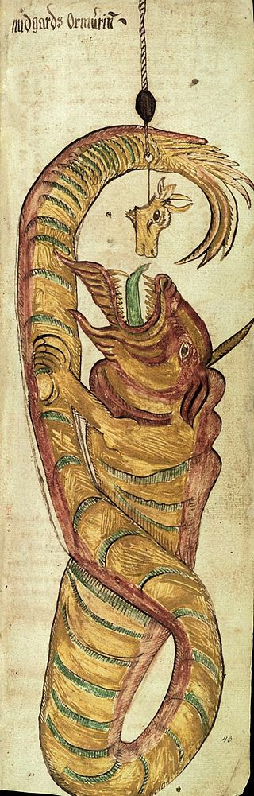Йормунганд или Ёрмунганд (на др.-сканд. Jörmungandr) – гигантский морской змей из древнескандинавской мифологии. Он столь огромен, что опоясывает своим телом всю Землю и кусает собственный хвост. Морской змей Ёрмунганд – сын бога Локи и великанши Ангрбоды. Его также называют Мидгардсорм, т.е. змей Мидгарда или Мировой Змей. Это один из персонажей, участвующий в гибели мира, Рагнарёке.
Большая змея Ёрмунганд – персонаж, который часто появляется в скандинавских мифах. Основной мотив – это противостояние с богами, в частности, с Тором, богом грома и молний, защитником человечества. Именно Тора называют главным противником Ёрмунганда. Большинство сохранившихся легенд посвящёно их встречам. Также существуют легенды о рождении змея от Ангрбоды из рода великанов и о том, как мировой змей примет участие в разрушении мира.
Как бог Ёрмунганд всё же не почитался. Это было хтоническое чудовище, связанное с дикими первобытными силами. Поэтому в мифах сын Локи змей Ёрмунганд всегда выступает отрицательным персонажем. Он противостоит богам и принимает непосредственное участие в гибели мира, во время которой распространяет везде свой яд. Но всё же этот змей являлся важным героем скандинавского пантеона. В некоторых анализах мифов про Ёрмунганда указывается, что это морское чудовище является важной частью баланса во Вселенной.
Хель
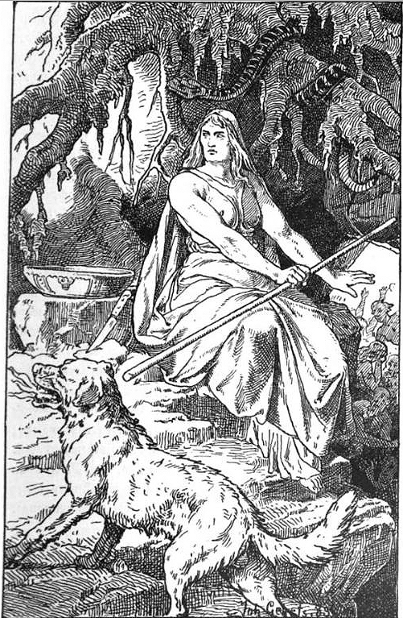Хель (Hel (древнескандинавский: [ˈhel])) — богиня мертвых и полновластная владычица Хельхейма, царства мертвых. Ее отцом был Локи, а матерью — великанша Ангрбода. Рожденная в Железном лесу, Хель была низвержена Одином в преисподнюю — в Нифльхейм.
Скандинавская богиня Хель — нейтральное божество. Она олицетворяет собой смерть, которой все равно, кого забирать. Она не злая и не добрая, но в своем царстве она привечает абсолютно всех, кто погиб не на поле брани.
Древний миф гласит, что однажды из Хельхейма выйдет полчище мертвецов, чтобы сразиться с асами. Но пока богиня Хель справедливо правит в своем мрачном царстве — и делает все, чтобы соблюсти баланс между жизнью и смертью.
Скандинавская богиня Хель — оборотень, и в ее жилах течет йотунская кровь. Временами она живет в своих чертогах, но также она часто отправляется путешествовать по мирам. В человеческом мире она появляется в образе полуснгившего трупа.
Древние скандинавы верили, что тот, кто увидит Хель, непременно умрет. И это неудивительно, поскольку богиня Хель в скандинавской мифологии олицетворяет смерть.
Есть и другое описание богини Хель. Частично она прекрасная женщина — настолько прекрасная, что красота всех красавиц мира меркнет по сравнению с ней. Но частично она является все тем же разлагающимся трупом. Иногда границы между этими образами проходит горизонтально. Но обычно она идет сверху вниз.
В редких случаях Хель (также в источниках ее называют Хела) принимает образ белокожей и белокурой девушки, которая источает запах тлена.
Слейпнир
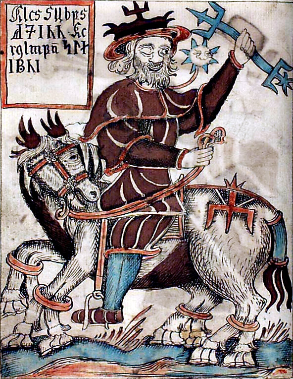Слейпнир (Sleipnir /ˈsleɪpnɪər/ (древнескандинавский: [ˈslɛipnez̠]; «slippy» or «the slipper»)) — чудесный восьминогий конь. Это самый быстрый скакун на свете, на котором ездит сам Один. Слейпнир также имеет божественное происхождение, хотя, по мнению некоторых мифологов, это хтоническое существо, в котором имеются черты, связанные с шаманизмом.
Слейпнир в скандинавской мифологии часто не отделим от Одина. До сих пор на отдельных хуторах существует присказка о том, что “Один скачет на Слейпнире” по темным холмам и долинам.
В мифах рассказывается, что чудесный конь является сыном жеребца Свадильфари и Локи, который принял облик кобылы и родил его — родил в Железном лесу.
В Рагнарёк Один выедет на битву с чудовищами и великанами верхом на Слейпнире — и этот бой будет последним для обоих.
Однажды Тор ушел воевать с великанами, и Асгард оставался крайне уязвимым для врагов. Вдруг во дворец пришел необычный гость: это был великан-каменщик, который предложил построить вокруг огромную и неприступную стену. Оплату за услугу он потребовал небольшую: всего-то солнце и луну, да богиню Фрейю в придачу. Локи посоветовал богам соглашаться.
У великана был конь, которого звали Свадильфари. Это был необычный конь: он легко таскал каменные глыбы, и с его помощью великан легко справлялся с работой.
Увидев это, боги собрались на совет, и во всем обвинили Локи: это по его вине они сейчас лишатся солнце и луны, так пусть он и придумывает, как обмануть великана. И Локи придумал.
Он обернулся красивой кобылой, и заманил Свадильфари в лес. Великан понял, что его обманули, и впал в ярость. К счастью, к этому моменту вернулся Тор, который проломил великану голову. А кобыла родила чудесного жеребенка с восемью ногами. Один взял его себе и назвал Слейпнир, что значит “Скользящий”.
Нидхёгг
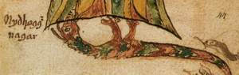Нидхёгг (др.-сканд. Níðhǫggr, «злобно разящий») – дракон из древнескандинавской мифологии. Дракон Нидхегг входил в число хтонических чудовищ, врагов богов. Нидхёгг жил под Иггдрасилем, Мировым древом, и подгрызал его корни. Он также постоянно враждовал с безымянным орлом, что жил на самом древе. Дракон Нидхегг в скандинавской мифологии также терзает убийц, прелюбодеев и клятвопреступников.
Фафнир
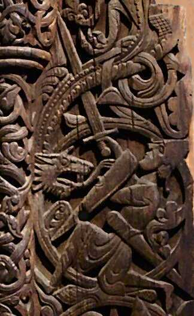Фафнир или Фафни (др.-исл. Fáfnir) – персонаж древнескандинавской мифологии. Мифология Фафнира иногда описывает его как карлика или великана. Позже, заполучив проклятое золото, этот персонаж превращается в дракона. Главный мотив легенд о Фафнире – его вражда со своими отцом и братом из-за этих сокровищ. Убийство дракона Фафнира стало одним из подвигов героя Сигурда (Зигфрида). Фафнир появляется в «Саге о Вельсунгах» и некоторых других источниках.
Вот подробное описание из «Саги о Вельсунгах»:
А когда змей тот пополз к воде, то задрожала вся округа, точно сотряслась земля, и брызгал он ядом из ноздрей по всему пути, но не устрашился Сигурд и не испугался этого шума. А когда змей проползал над ямой той, вонзил Сигурд меч под левую ключицу, так что клинок вошел по рукоять. Тут выскакивает Сигурд из ямы той и тянет к себе меч, и руки у него — все в крови по самые плечи. И когда огромный тот змей почуял смертельную рану, стал он бить головой и хвостом, дробя все, что под удар попадало.
Гери и Фреки
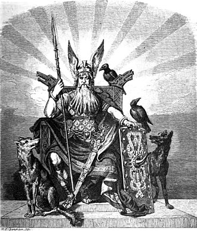Гери и Фреки в скандинавской мифологии (др.-сканд. Geri и Freki)– два волка, которые сопровождают Одина. По мнению учёных, эти животные воплощают физическую мощь божества. Как и вороны Одина, Гери и Фреки могут приходить на поле боя и пожирать павших воинов. Также в текстах рассказывается, как верховный ас кормит их со стола. Гери и Фреки присутствуют в Старшей и Младшей Эдде.
По мнению учёных, мифические волки Гери и Фреки могли быть физической силой Одина. В европейских культурах часто встречаются волки, которые связаны с богами и героями.
Хугин и Мунин
Хугин и Мунин в скандинавской мифологии – два ворона, принадлежавшие Одину. Они были посланниками верховного бога скандинавов. Также вороны летали по всему миру и приносили Одину вести со всего мира. Хугин и Мунин на скандинавском означали «мыслящий» и «помнящий». Один подарил им возможность говорить.
Часто исследователи считают, что вороны Одина Хугин и Мунин могут быть связаны с шаманскими практиками. Во время этих практик шаман входит в транс и отправляется в путешествие, в том числе в другие миры. Возможно, Один через своих воронов посылает свой разум и мысли в подобное странствие. В «Речах Гримнира» Старшей Эдды Один беспокоится о своих воронах, боясь, что они могут не вернуться. Это может быть намёком на те опасности, с которыми может встретиться шаман.
Тангиост и Тангризнир
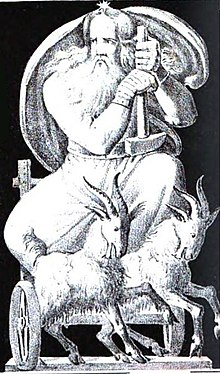Тангниостр и Тангриснир — в скандинавской мифологии козлы, которые тянут колесницу бога грома Тора.
В Младшей Эдде рассказано о том, что Тор каждую ночь убивает своих козлов, варит их мясо и потребляет в пищу, оставляя нетронутыми кости, но после с помощью своего молота воскрешает их к жизни на следующий день; таким образом, козлы являются для него неисчерпаемым источником пищи. В этом же источнике говорится о том, что однажды Тор ночевал у крестьян и поделился с ними мясом своих козлов, однако запретил им трогать кости. Но Тьяльфи, сын хозяина дома, не послушался и сломал одну из костей, чтобы высосать из неё мозг. Наутро Тор воскресил козлов и, обнаружив, что один из них хромает, заставил в наказание Тьяльфи и его сестру Рёскву пожизненно служить ему.
Образ козлов некоторые учёные возводят к мифологическому вепрю Сехримниру, которого асы каждый вечер закалывают и съедают в Асгарде, но который затем воскресает. Другие учёные отождествляют Тангниостра и Тангриснира с историями о ведьмах из скандинавского фольклора.
Скинфакси и Хримфакси
Кони Скинфакси и Хримфакси – мифологические животные из скандинавских легенд. Они являлись конями, которые везли по небу богов ночи и дня. О них сохранилось мало легенд, а также почти полностью отсутствуют описания. Из «Речей Вафтруднира» известно только, что у Скинфакси сияющая грива. Этот конь вёз по небу бога Дагра или Дага, персонификацию дня. Сияние чудесной гривы скакуна освещало как небо, так и землю, принося день.
Эйнхерии
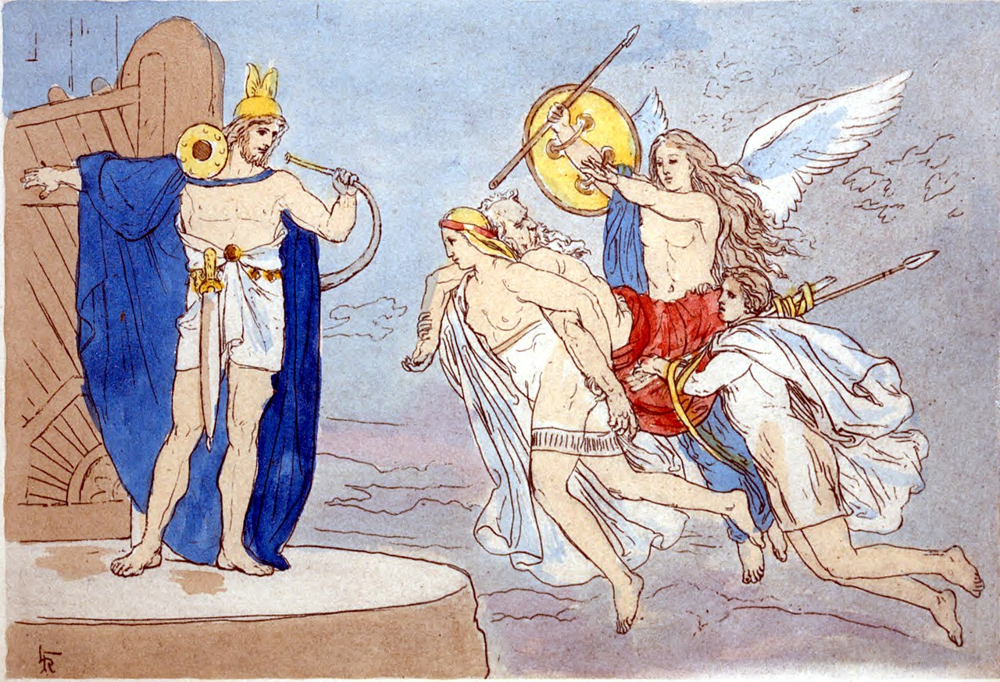Эйнхерии (einherjar) – воины, живущие в Вальгалле. Валькирии, служащие Одину, отбирали на поле боя половину воинов. Иногда считалось, что эйнхериями становятся только лучшие, те, кто умер с оружием в руках. Вторая половина отправлялась в зал Фрейи. В Вальгалле эйнхерии большую часть времени сражались, тренируясь. В Рагнарёк они должны были выступить на стороне асов в битве с чудовищами.
Эйнхерии в скандинавской мифологии практически постоянно сражались друг с другом. Их главной задачей было подготовиться к Рагнарёку, концу света. В этот день асы будут сражаться с ужасными чудовищами, своими врагами. Огромное войско эйнхериев будет им помогать. Когда они не сражаются, эти воины пируют и пьют мёд, поднесённый валькириями.
Пищу готовит Андхримнир, повар, который берёт мясо вепря Сехримнира. Этот вепрь всегда оживает, сколько бы раз его не съедали, и его свинина самая лучшая. Андхримнир варит мясо в котле под названием Эльдхримнир. Один также перечисляет валькирий и рассказывает, что они приносят эль эйнхериям.
Коза Хейдрун
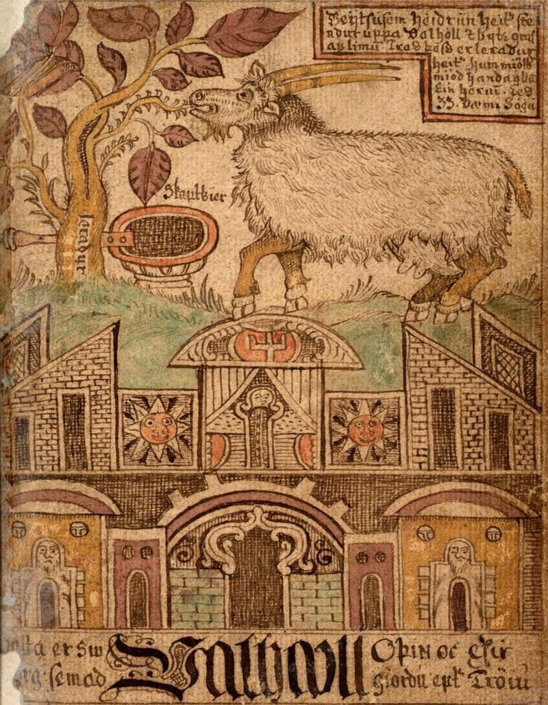Коза Хейдрун (др.-исл. Heiðrún) принадлежит к числу мифологических животных скандинавов. О ней сохранилось мало упоминаний, их можно найти в Старшей и Младшей Эдде. Эта коза была одним из животных, связанных с Мировым древом Иггдрасиль. Стоя на крыше чертога Вальгалла, Хейдрун объедала листья древа. Мёд, который она давала, пили воины в Вальгалле.
Это древо проходило через все миры и являлось осью для Вселенной. Древо служило домом ещё на нескольких животных. Например, его листвой также питался олень Эйктюрнир, вода с рогов которого образовывала все реки. Иногда говорилось, что Хейдрун ест листву с древа Лерад. Лерад находится у палат Одина, то есть в центре мира, что может указывать на его роль как оси Вселенной. Поэтому считается, что это другое название Иггдрасиля.
О Хейдрун в «Видении Гюльви» рассказывает Один, скрывшийся под именем Высокий. Конунг Гюльви спрашивает его, что пьют эйнхерии в Вальгалле. На предположение, что это просто вода, Один возражает и описывает, как Хейдрун ест почки (или иглы) с дерева Лерад. Мёдом из её вымени удаётся наполнить огромный котёл.
Эйктюрнир
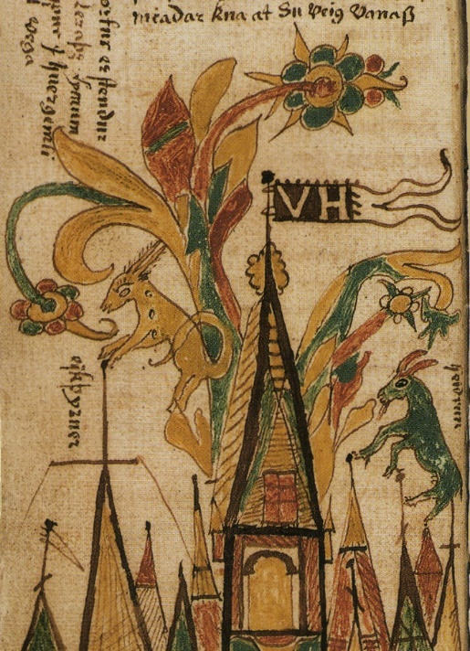Олень Эйктюрнир в скандинавской мифологии – одно из мифологических животных, живущих у Иггдрасиля. Иггдрасиль является Мировым древом скандинавов. Это гигантский ясень, проходящий через все миры. Эйктюрнир питается листвой древа. Чтобы дотянуться до листвы, олень встаёт на крышу чертога Вальхаллы. Этот чертог принадлежит Одину, туда уходят воины, павшие в битвы. После каждого сражения валькирии отбирают половину погибших, чтобы сопроводить в Вальгаллу.
Эйктюрнир играет важную роль в возникновении всех рек на земле и в мире богов. Влаги на его рогах так много, что она стекает вниз, в Хвергельмир. Это поток, название которого означает «Кипящий котёл». Из него вытекают реки.
Там же есть описание Эйктюрнира, похожее на текст «Речей Гримнира». В некоторых переводах «Видения Гюльви» олень находится не на крыше Вальгаллы, а в самом чертоге. Но вариант, где он стоит на чертоге, считается более естественным и подходящим по контексту.
Цверги
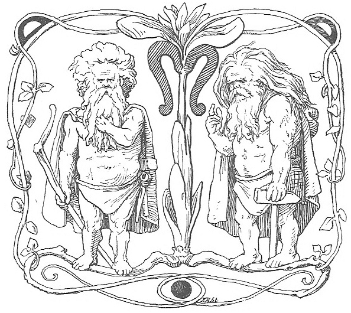Цверги (Старый английский dweorg, древнескандинавский dvergr [ˈdwerɡz̠] and Старый верхненемецкий twerg.) — в древнескандинавской мифологии жители преисподней, Свартальвхейма. Также их называют карлами, карликами и гномами. Они — предтеча классических гномов европейского фольклора и антагонисты как светлых альвов, так и асов. Цверги были сделаны богами из тела первовеликана Имира.
Цверги в скандинавской мифологии чаще всего упоминаются как искусные мастера, которые в частности выковали Одну его копье, не знающее промаха, а Тору — его знаменитый Мьельнир. В некоторых сказаниях (в частности в сюжете о Квасире) они выступают в роли предателей и коварных убийц. Но иногда они соприкасаются с миром богов с относительно мирными намерениями — как, например, цверг Альвис, мечтавший жениться на дочери Тора, Труд.
Квасир
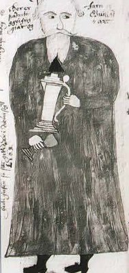Квасир (Kvasir, древнескандинавский: [ˈkwɑsez̠]) — человек (по другим данным — неопределенное существо), созданное из слюны асов и ванов после окончания кровопролитной войны богов.
Как и Бальдр, Квасир в скандинавской мифологии играет роль невинной жертвы. Но только если гибель Бальдра была роковой, то смерть Квасира привела к созданию удивительного меда поэзии.
Произошло это так: Квасир странствовал по мирам и учил людей мудрости. Однажды в Мидгарде к нему подошли два карла, и пригласили его к себе в Свартальвхейм. Он не мог отказаться и поплатился за это жизнью. Из крови Квасира верги сделали чудесный мед, а асам сказали, что Квасир “захлебнулся в собственной мудрости”.
Свадильфари
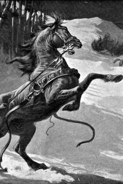Свадильфари – волшебный конь безымянного великана-каменьщика, который по договору с асами взялся за одну зиму возвести неприступные стены вокруг Мидгарда. Свадильфари – всем коням конь. Волшебный конь Свадильфари не менее известен, чем Слейпнир, хотя в «Младшей Эдде» Стурлусона об этом мифологическим персонаже сказано совсем немного. Свадильфари фигурирует в мифе о том, как безымянный великан-каменщик возводил стену вокруг Мидгарда.
За свою работу мастер потребовал луну, солнце и Фрейю. Локи намекнул сомневающимся богам, что даже столь могучий великан физически не в состоянии выстроить стену в срок (за одну зиму). Однако мастер всех удивил, потому что у него для богов был припасен сюрприз – тот самый волшебный конь Свадильфари, о происхождении которого ничего не известно. В «Младшей Эдде» сказано, что Свадильфари был невероятно силен и «делал вдвое больше каменщика». Асам стало очевидно, что великан успеет выстроить стену и тогда они ополчились на Локи, потому что условия мастера были приняты по его совету. Локи, как обычно, не растерялся, но о последствиях дальнейших событий распространяться не любил. Когда каменщику осталось достроить лишь ворота, он двинулся к каменоломне со Свадильфари. Внезапно из леса выскочила кобыла, которая привлекла (в том самом смысле) волшебного коня, который пусть хоть тысячу раз волшебный, но все же в первую очередь – конь. Свадильфари рванулся за кобылой, которая тут же скрылась в лесу. Великан тщетно пытался вернуть коня, бродя по окрестным лесам. Он понял, что его обманули и обозлился на асов, стал метать в них камни и в итоге был убит Тором.
Рататоск

В скандинавской мифологии звучным словом «Рататоск» называлась белка, которая обитала на стволе древа Иггдрасиль. С древнескандинавского «ratatǫskr» можно перевести как «грызозуб», по сути это слово является кеннингом белки. Рататоск в эддических текстах упоминается всего один раз – в песне «Речи Гримнира» из Старшей Эдды. Тем не менее, это достаточно глубокий, хотя и не однозначный образ, имеющий фундаментальное значение в контексте космогонической мифологии германо-скандинавских народов. Белка Рататоск упоминается в связи с тем, что дракон Нидхегг, обитающий у корней Мирового Древа, постоянно спорит с великим орлом, что живет на самой вершине Иггдрасиля. Однако расстояние между Нидхеггом и орлом (по одной из версий этим орлом является йотун Хресвельг) слишком велико, чтобы они могли общаться напрямую. Роль «связиста» выполняет Рататоск, она неустанно мечется вдоль ствола, передавая слова Нидхегга и орла.
Аудумла
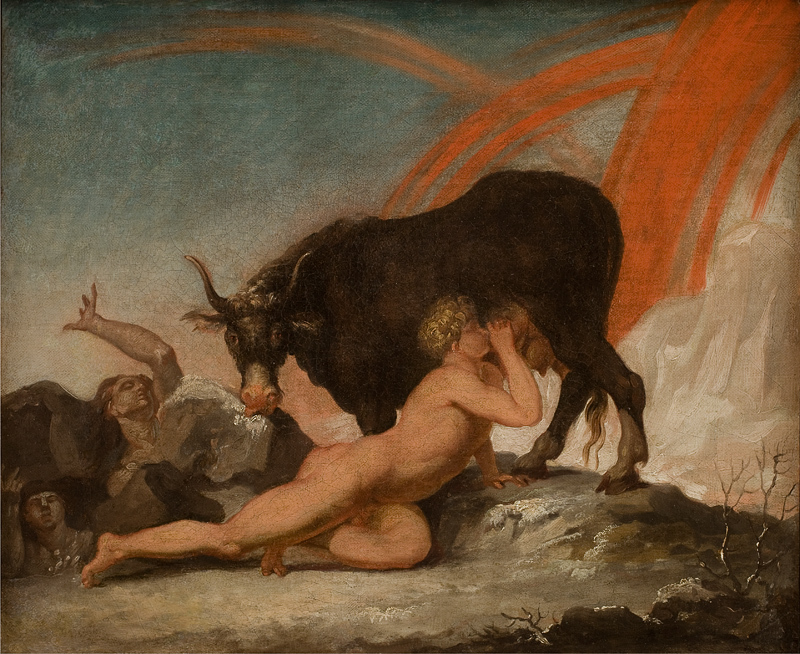Корова Аудумла или Аудумбла (на др.-сканд. Auðumbla либо Auðhumla, Auðumla) – животное из скандинавской мифологии. Она присутствует в мифах про сотворение мира и появление первых богов и людей. Аудумла возникла из тающего льда и была первым существом в мире наряду с Имиром. Имир – инеистый великан, который питался молоком Аудумлы. Из вымени той текли четыре молочные реки.
Сама Аудумла помогла появиться первочеловеку, Бури. От того произошли асы, в т.ч. Один, Вили и Ве, убившие великана Имира. Бури появился из солёных камней. Аудумла слизывала с них иней, и постепенно от её действий на камне проступал человек.
Исследователь Джон Линдоу писал, что Аудумла является связующим звеном между двумя группами персонажей. Это асы (через Бури) и инеистые великаны (Имир), которые обычно враждовали.